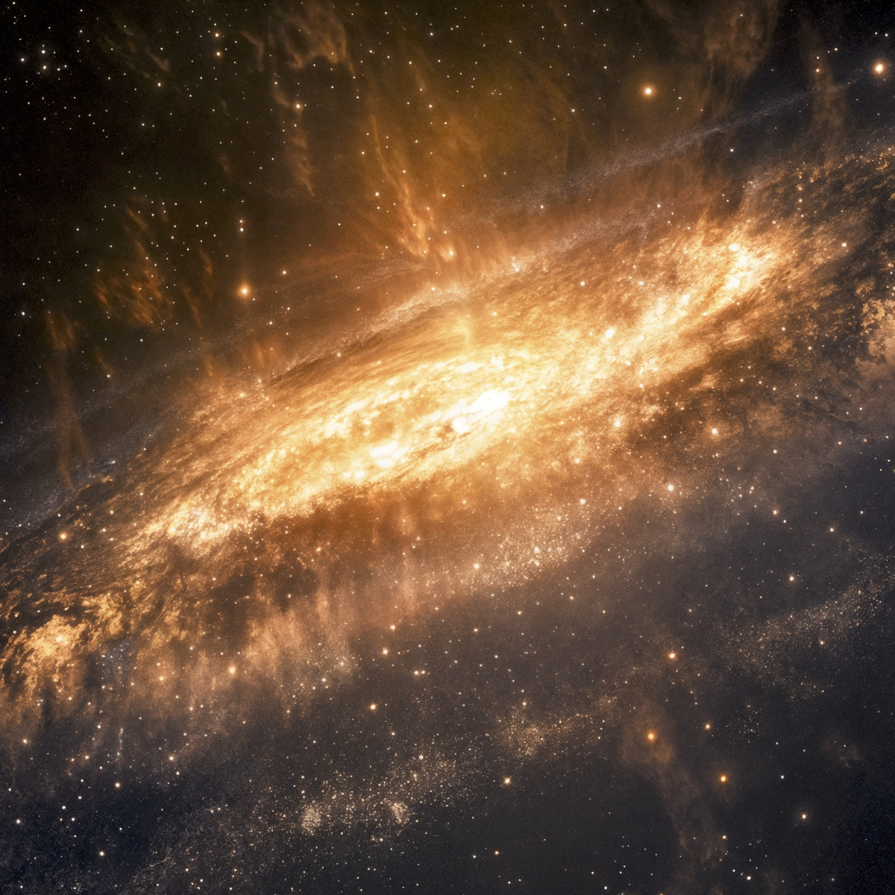
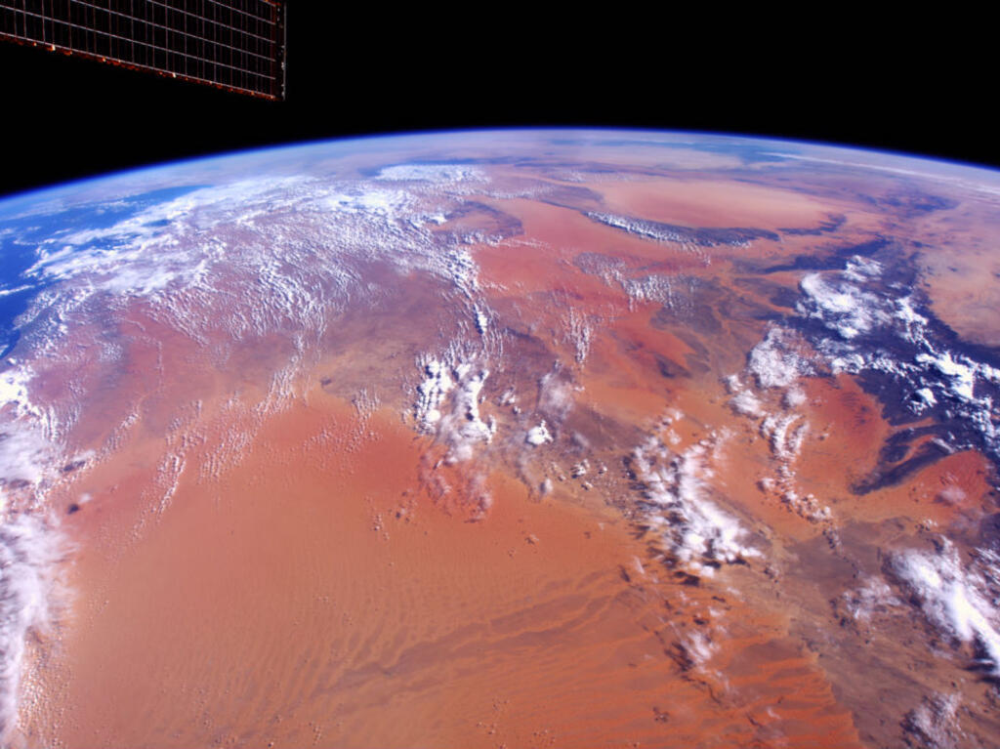

ARCHIVES VISUELLES · 001—012
AUX FRONTIÈRES DU VISIBLE
Le cosmos,
en grand.
Un voyage à travers les images les plus saisissantes de notre univers. Prenez le temps de regarder.
Défiler pour explorer↓01 / NÉBULEUSE DORÉEESPACE PROFOND · 4K
01 LA VISION
Un regard
vers l’infini.
Des galaxies lointaines aux nuages de poussière stellaire, chaque image ouvre une fenêtre sur un monde qui nous dépasse.
ORBITAL/01 rassemble ces fragments de cosmos dans une collection à parcourir lentement, comme une exposition sous les étoiles.
Parcourir la collection ↘13,8 Mdannées d’univers
∞choses à découvrir
001—012fragments réunis

NOTRE POINT BLEU
Chez nous,
vus de loin.
Un horizon fragile, suspendu dans l’obscurité.
Continuer le voyage ↗02 LA COLLECTION
FENÊTRES SUR L’UNIVERS
La beauté
du lointain.
Douze images, un seul mouvement : s’éloigner juste assez pour voir autrement.
FIN DE LA COLLECTION · LE CIEL RESTE OUVERT
IL Y A TOUJOURS PLUS LOIN.
TRANSMISSION · 001
Une autre
façon de voir.
Installez-vous et laissez défiler les images. Le voyage continue au-delà du cadre.
LECTURE VIDÉO ↗